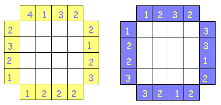
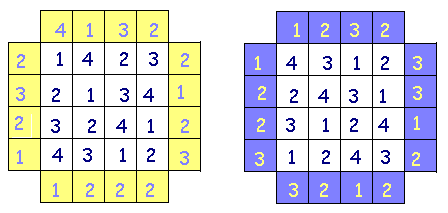
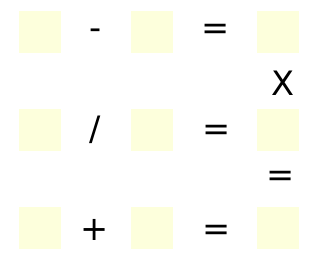
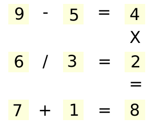
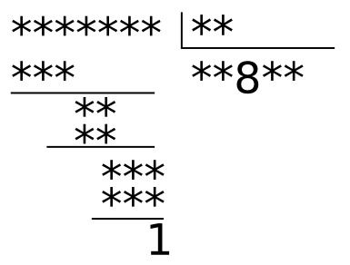
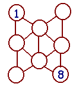
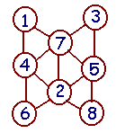
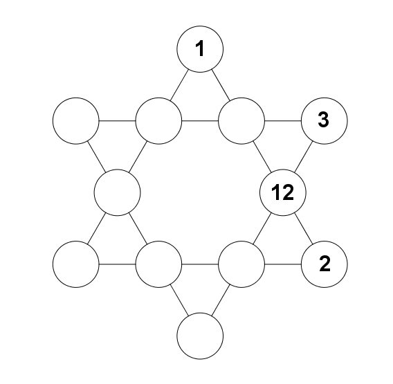
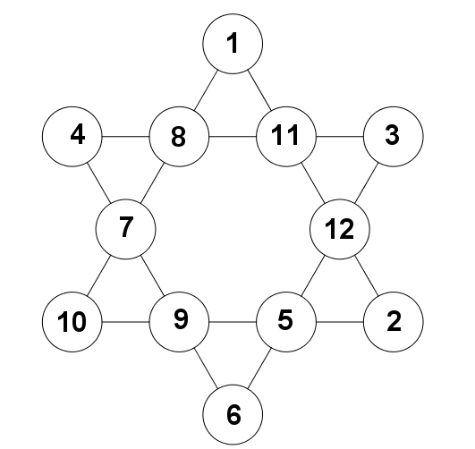
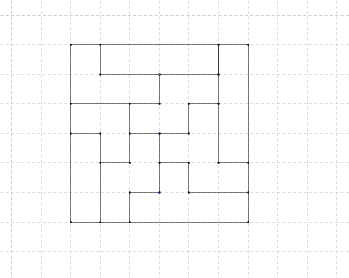

Voici quelques petits problèmes de type grilles à compléter.
Hauteurs de batons
Sur chacune des 16 cases d'un tableau 4×4, on a placé des bâtons de bois de 1,2,3 ou 4m, de sorte que, sur chaque ligne ou chaque colonne, il n'y ait jamais 2 bâtons de la même hauteur. On a ensuite indiqué, sur les bords, le nombre de bâtons visibles par un observateur situé à cet endroit. Par exemple, si la rangée est 1 3 2 4, un observateur placé à gauche voit 3 bâtons (ceux de 1,3 et 4m), un observateur placé à droite n'en voit qu'un (celui de 4m).
A vous de remettre, dans le tableau, la bonne hauteur de bâton!


Neuf cases
Comment compléter la grille suivante en utilisant tous les chiffres de 1 à 9 de sorte que les
opérations mentionnées soient toutes exactes?

Commençons par examiner la dernière colonne. Le produit ne peut pas dépasser 9.
Les produits possibles sont donc 1 par un autre chiffre, 2*3, 2*4, 4*2, 3*2, 3*3. Les produits par 1
sont impossibles car chaque chiffre ne peut apparaitre qu'une fois, de même, on ne peut pas
avoir 3*3. Étudions alors les 4 derniers cas possibles de répartition des chiffres dans la première colonne :
(2,3) : dans la deuxième ligne, les seules divisions qui donnent 3 sont 9/3 et 6/2. Elles ne conviennent pas car 2 et 3
ont déjà été choisis.
(2,4) : dans la deuxième ligne, la seule division qui donne 4 est 8/2, mais elle ne convient pas car 2 a déjà été choisi.
(3,2) : la case en haut à gauche doit nécessairement contenir le chiffre 9, est la seule possibilité pour la première ligne
est 9-6=3, qui ne convient pas car 6 a déjà été choisi.
(4,2) : du fait que 2 a déjà été choisi, la deuxième ligne est nécessairement 6/3=2, et on trouve facilement que
la première doit être 9-5=4. On complète alors la grille pour trouver :

Multiplication à trous
Sauriez-vous compléter la multiplication suivante dont certains calculs ont été effacés?
$$
\begin{array}{cccccc}
&&\cdot&\cdot&\cdot&3\\
\times&&&\cdot&\cdot&\cdot\\
\hline
&&\cdot&\cdot&\cdot&\cdot\\
&\cdot&2&1&3&\\
\cdot&\cdot&\cdot&9&&\\
\hline
\cdot&\cdot&\cdot&\cdot&\cdot&4
\end{array}$$
On va procéder étape par étape. On cherche d'abord les chiffres des unités manquants. On trouve
facilement en remontant qu'ils sont égaux à 4, puis à 8 (le seul multiple de 3 donnant un chiffre des unités égal à 4 est 3×8).
Le 3 de la colonne des dizaines nous donne ensuite le chiffre des dizaines du deuxième nombre (c'est 1), puis les chiffres des dizaines
et des centaines du premier nombre. On est arrivé alors à :
$$
\begin{array}{cccccc}
&&\cdot&2&1&3\\
\times&&&\cdot&1&8\\
\hline
&&\cdot&\cdot&\cdot&4\\
&\cdot&2&1&3&\\
\cdot&\cdot&\cdot&9&&\\
\hline
\cdot&\cdot&\cdot&\cdot&\cdot&4
\end{array}$$
On complète alors sans problèmes les colonnes des dizaines et des centaines :
$$
\begin{array}{cccccc}
&&\cdot&2&1&3\\
\times&&&\cdot&1&8\\
\hline
&&\cdot&7&0&4\\
&\cdot&2&1&3&\\
\cdot&\cdot&\cdot&9&&\\
\hline
\cdot&\cdot&\cdot&7&3&4
\end{array}$$
Comme la multiplication par 8 du premier nombre ne donne qu'un nombre à 4 chiffres, c'est que le premier nombre commence par 1. Enfin, le dernier 9 non encore
utilisé donne que le deuxième chiffre commence par 3. Il s'agit alors simplement de terminer le travail, et on trouve :
$$
\begin{array}{cccccc}
&&1&2&1&3\\
\times&&&3&1&8\\
\hline
&&9&7&0&4\\
&1&2&1&3&\\
3&6&3&9&&\\
\hline
3&8&5&7&3&4
\end{array}$$
Division à trous
Ma fille faisait ses devoirs tranquillement. Elle était en train d'apprendre à faire des divisions,
complètant sur son cahier la division laissée en devoir. Elle avait fini mais avait laissé son cahier ouvert
quand vint son petit frère. Il prit le stylo plume de sa soeur et le secoua. Des taches s'éparpillèrent sur le cahier.
De la division, on ne voyait plus que ceci :

Quand ma fille revint, elle fondit en larmes. Tant de travail gâché, et en plus, elle n'avait même plus l'énoncé!
Aidez-moi à sécher ses larmes en reconstituant la division!
On remarque d'abord que la division est obtenue en 3 étapes seulement, alors que le quotient comporte 5 chiffres. C'est donc que
deux de ces 5 chiffres sont nuls, et la disposition de la division montre que ce ne peuvent être que le 2ème et le 4ème chiffre.
De plus, le troisième chiffre du quotient est 8, et 8 fois le diviseur donne un nombre à deux chiffres. Le diviseur ne peut donc être que 10, 11 ou 12.
Mais le premier chiffre du quotient multiplié par le diviseur donne un nombre à 3 chiffres, et de même pour le dernier chiffre du quotient multiplié par un nombre à 3 chiffres.. Avec ce que l'on avait déjà déduit, on ne
peut avoir que le premier chiffre du quotient égal à 9, et le diviseur égal à 12.
Résumons ce que nous avons obtenu : le diviseur est 12, le quotien est 90809, le dividende est 108****, et le reste est 1. On retrouve alors le dividende par la formule 90809×12+1=1089709. Ouf!
Du rififi chez les nombres
Il y a du rififi chez les nombres : 1 et 2 ne peuvent plus se sentir, 2 et 3 sont en brouille, 3 et 4 ont des problèmes de voisinage... Bref, les nombres consécutifs ne s'entendent plus. Il vous faut pourtant disposer tous les nombres de 1 à 8 dans les cases ci-dessous. Bien entendu, 2 cases qui ont un lien en commun ne doivent pas porter des nombres consécutifs! Comment les rangez-vous?


Étoile à compléter
Compléter l'étoile suivante avec tous les nombres de 4 à 11 de sorte que les totaux sur chaque ligne soient égaux.

Voici une solution possible :

La recherche de cette solution est grandement facilitée si on commence par déterminer le total sur chaque ligne. Notons le $S$. Il y a $6$ lignes, et on voit que tous les nombres de $1$ à $12$ vont intervenir sur deux lignes uniquement. On a donc
$$6S=2\times(1+2+\dots+12)=2\times \frac{13\times 12}{2}.$$
On trouve
$$S=26.$$
On place alors facilement le $11$. On peut alors compléter le reste.
Clueless
Voici une grille 6×6.

Il faut en faire un carré latin, c'est-à-dire qu'il faut que, sur chaque ligne et sur chaque colonne,
chaque nombre apparaisse exactement une fois, avec la contrainte supplémentaire suivante :
la somme des chiffres inscrits dans chaque région délimitée par des traits droits doivent être égales.
Chaque ligne doit totaliser 1+2+3+4+5+6=21. La somme totale des chiffres inscrits
dans la grille est donc 6×21. Il y a 9 zones, et donc chaque zone doit totaliser 6×21/9=14.
On peut alors raisonner en commençant par en bas à gauche. On doit avoir dans le bloc vertical de 3 cases
3 chiffres différents, compris entre 1 et 6, et dont la somme fait 14. Ce ne peut être que 3, 5 et 6.
Les cases au-dessus portent donc les chiffres 1,2 et 4. Considérons le bloc de 3 cases en triangle
juste au-dessus du précédent. Il ne peut comporter un 1 ou un 2, sinon la somme ne pourrait faire 14.
Il doit donc comporter un 4. En raisonnant ainsi, on peut terminer de remplir le tableau. On obtient un résultat
unique, qui est le suivant :